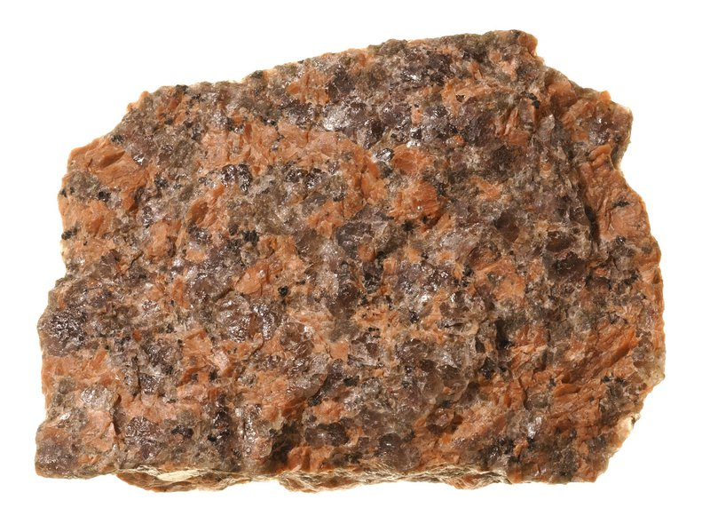

Welcome to basic rock studies 101! Below is an igneous rock. Igneous means "fire born" and is formed by the cooling of molten rock.
When a volcano erupts, its magma becomes lava as it touches the Earth's surface. The rocks that the lava cools down on are classified as Extrusive Igneous Rocks!
The magma that doesn't erupt cools down and solidifies, classifying it as, you guessed it, Intrusive Igneous Rocks!
 Click here for a brief visual aid!